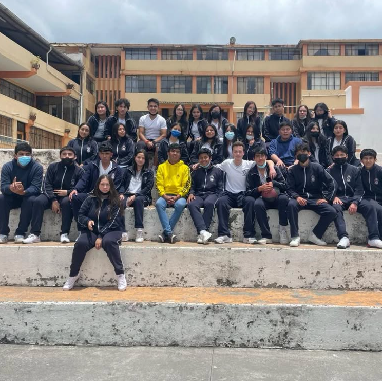
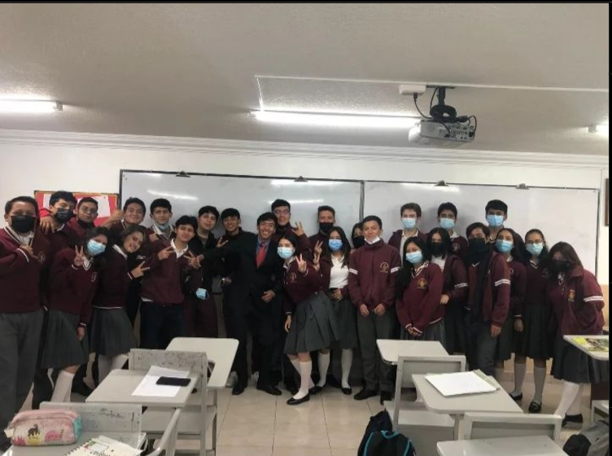
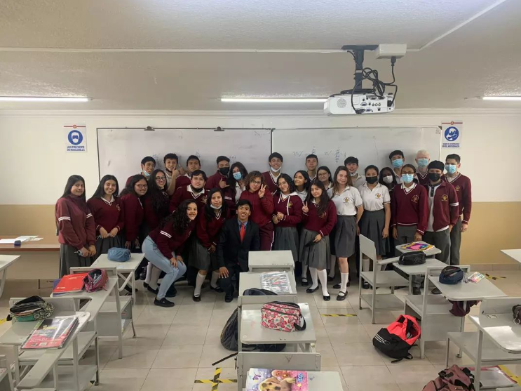

12
repositorios en GitHub
Ingeniero en Computación
Especialista en desarrollo de software, automatización con IA y arquitectura técnica. Construyo soluciones mantenibles, escalables y listas para producción.
repositorios en GitHub
sistemas en producción
stack principal
Sobre mí
Soy Richard Stalyn Rodriguez Villarreal, ingeniero en computación y desarrollador de software. Diseño, construyo y mantengo sistemas reales en producción: desde plataformas SaaS multi-tenant hasta bots que automatizan procesos de negocio con inteligencia artificial.
Actualmente trabajo en el Hospital San Vicente de Paul de Ibarra, Ecuador. También he trabajado como docente en la UE San Pedro Pascual y en la Universidad Politécnica Estatal del Carchi, además de desarrollar soluciones con sistemas operativos, automatización y herramientas técnicas.
Trayectoria
Actual
Apoyo técnico, estabilidad operativa y mejora continua de procesos internos en Ibarra, Ecuador. Esta experiencia consolida mi capacidad para resolver incidencias, adaptarme a flujos críticos y trabajar con responsabilidad.
Docencia
Docente de Computación y Emprendimiento y Gestión. Desarrollo de clases con enfoque práctico, acompañamiento a estudiantes y organización de contenidos orientados al aprendizaje aplicado.
Formación técnica
Pasantía con actividades de diagnóstico, mantenimiento preventivo, respaldo y recuperación de datos, administración de redes, ciberseguridad básica e instalación de software y hardware.
Comercio y gestión
Experiencia en mercadería, atención al cliente, caja, logística, inventarios, archivo, planificación, asesoramiento y control de operaciones, reforzando disciplina, orden y capacidad de respuesta.



Formación
Referencias
Subjefatura de tienda - Supermaxi
Avena Polaca
Jefatura de TICs - UPEC
Nombres y datos de contacto de cada referencia disponibles a solicitud durante un proceso de selección.
Habilidades
Aplicaciones web, APIs, arquitectura limpia y sistemas multi-tenant en producción con Laravel.
Bots y flujos de negocio con Playwright e integración de modelos de IA (Gemini, DeepSeek) para tareas reales.
Linux, shell scripting, administración y solución de problemas en entorno real.
MySQL, Docker, control de versiones con Git y despliegue de aplicaciones en producción.
Colaboración comunitaria, repositorios públicos y mejora continua.
PHP, Laravel, JavaScript, Node.js, React, Python, HTML y CSS.
Proyectos reales
Node.js · Playwright · IA
Bot que automatiza recargas móviles y pago de servicios en Ecuador. Clasifica la intención del cliente con IA (DeepSeek/Gemini), ejecuta el flujo con Playwright sobre el sitio del proveedor y exige confirmación del administrador con un código de un solo uso antes de cobrar.
Ver repositorioLaravel · Alpine.js · Gemini IA
Plataforma para empresas de catering: matriz visual de planificación de menús (drag & drop), costeo en cascada por receta, alertas de presupuesto por servicio y generación de menús semanales con IA a partir del catálogo real de recetas.
Repositorio privado · disponible bajo solicitud
Laravel 12 · React 18 · Inertia.js
Plataforma SaaS multi-tenant para varios comercios, con punto de venta para restaurantes/retail y facturación electrónica integrada al SRI. 69 pruebas automatizadas y despliegue con Docker, en producción.
Repositorio privado · disponible bajo solicitud
Laravel · MySQL
Aplicación web para el registro y seguimiento de dietas hospitalarias.
Ver repositorioCódigo Abierto
Mi perfil open source refleja contribuciones reales, aprendizaje constante y una mentalidad de compartir conocimiento útil.
Actividad reciente registrada en eventos públicos de GitHub.
Trayectoria desde la creación de la cuenta en 2020.
Lenguaje con mayor presencia en repositorios visibles.
Contacto
Escríbeme directo por WhatsApp y te respondo con enfoque técnico y soluciones claras.